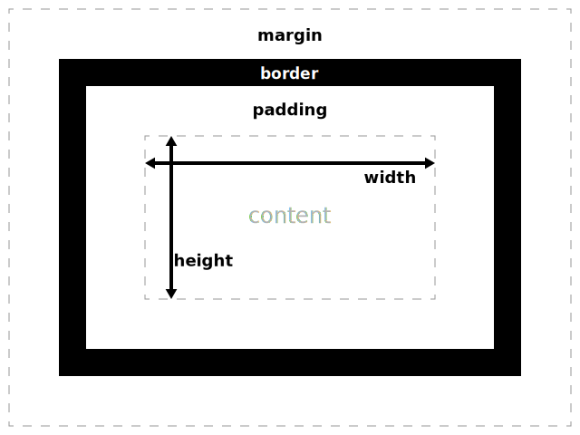

ISN Δ
ISN Δ
« Votre travail fait la différence ! »
 ISN Δ
ISN Δ
« Votre travail fait la différence ! »
Une feuille de style CSS (Cascading Style Sheet) permet de mettre en forme les différents éléments d'une page html. Pour cela, on définit des sélecteurs pour lesquels on attribue des propriétés de mise en forme.
Un sélecteur permet d'identifier à quel élément ou à quels éléments html on veut associer une certaine mise en forme. Les 3 types principaux de sélecteurs sont :
L'exemple suivant permet d'illustrer ce qui vient d'être écrit :
<!-- extrait du fichier HTML -->
<h1 class="texte_en_rouge">un joli titre en rouge</h1>
<p>un petit paragraphe sans prétention</p>
<p class="texte_en_rouge">
ce paragraphe en revanche est écrit en rouge, il a la même classe que le titre
</p>
<p>ce paragraphe aussi est écrit en noir, c'est un paragraphe "standard"</p>
<ul>
<li>premier item de la liste</li>
<li id="item_particulier">ce 2ème item sera souligné.
Il est repéré par son identifiant "item_particulier"
</li>
</ul>
/* extrait du fichier CSS */
p{
color: black;
}
.texte_en_rouge{
color: red;
}
#item_particulier{
text-decoration: underline;
}
L'exemple ci-dessus a introduit des propriétés assez évidentes comme la couleur du texte (color) ou la "décoration" du texte (text-decoration) et les valeurs choisies ne doivent pas sembler mystérieuses !
Il est possible de définir la mise en forme CSS directement dans le code de la page html mais on préfèrera nettement séparer le fichier html qui contient le contenu à présenter et le fichier CSS qui contient la mise en forme du contenu. Cela permet par exemple de modifier la couleur de tous les titres h1 de l'ensemble d'un site Web en effectuant une légère modification du fichier CSS, plutôt que de changer individuellement la mise en forme de chaque titre h1 de chaque fichier html que peut contenir le site complet (j'espère que cet exemple est assez convaincant).
On pourra toutefois à la marge utiliser du langage CSS directement dans un fichier html si on veut exceptionnellement mettre en forme un élément particulier. Pour cela, il faudra définir l'attribut style à l'élément en question avec comme valeur les propriétés CSS et leurs valeurs désirées.
Exemple :
<h2 style="color:red; text-decoration:underline;">titre particulier (rouge souligné)</h2>
La "bonne" méthode pour la mise en forme de votre site est donc de lier une feuille de style créée dans un fichier externe au fichier html. Pour cela, il faut ajouter dans l'en-tête du fichier html la ligne suivante :
<link rel="stylesheet" type="text/css" href="adresse_du_fichier.css"/>
Précisons qu'il est possible de lier plusieurs feuilles de style à un même fichier html.
Les propriétés liées à la couleur :
Les couleurs peuvent être définies par les valeurs rgb, hexadécimal, hsl (et même d'autres), ou par des noms explicites.
On peut aussi gérer la transparence des couleurs (ajout du "a" dans la définition de la couleur)
Exemples :
body{
color: rgb(103, 198, 133);
background-color: #e25158;
}
.nom_classe{
color: hsl(139, 58%, 33%);
background-color: rgba(235, 189, 87, 0.75);
}
#nom_id{
color: rgba(#716d30, 0.5);
background-color: purple;
}
En apprendre un peu plus sur la définition des couleurs pour un écran.
Voici les propriétés qui me semblent le plus utile (pour connaître les valeurs possibles, utliser la complétion de Atom, c'est assez explicite):
selecteur{
text-shadow: 5px 3px 1px black;
}
Plus d'info sur W3School
Toutes les balises de contenu html ont la structure correspondant à l'image suivante :

La "boite complète comprend :"
Toutes ces caractéristiques peuvent être mises en forme avec le langage CSS avec les propriétés margin, border, padding.
Le contenu d'une page Web s'affiche par défaut dans un flux continu qui place toutes les boites les unes à la suite des autres.
Il est toutefois possible de contrôler le positionnement des boites en les décalant par rapport à leur position "normale" prévue par le flux -- c'est le positionnement relatif -- ou même de définir une position spécifique (en px par exemple) de la boite par rapport au bord de la fenêtre du navigateur -- c'est le positionnement absolu.
En pratique, le positionnement peut-être assez complexe à mettre en oeuvre. Une recherche plus approfondie pourra être menée individuellement en fonction de l'estéhtique désirée sur votre site, par exemple sur le site MDN.
Une façon moderne et intéressante de placer les boites d'une page ou d'une partie d'une page Web est l'exploitation de la propriété flexbox du CSS. Ceci peut-être en particulier intéressant pour s'adapter à différentes dimensions d'écrans (ordi, tablette, smartphone). À nouveau le site MDN ou le site de la W3school donneront des pistes à développer pour cette utilisation.
Voici les propriétés qui me semblent le plus utile :
Par défaut, aucune ligne ne délimite les cellules d'un tableau. Cependant, cet affichage est rarement ce que l'on souhaite faire.
Pour "tracer" les lignes d'un tableau, il suffit de définir les propriétés de bordure avec la valeur solid et l'épaisseur de trait désirée en px. Attention, la bordure du tableau se gère indépendamment de la bordure des cellules qui sont aussi indépendantes les unes des autres. Ceci a pour conséquence de donner un aspect de "bordure double" si l'on ne prend pas soin de spécifier la valeur collapse à la propriété border-collapse. Bref, mon conseil de base pour tracer un tableau est le code CSS suivant :
table{
border-collapse: collapse;
}
td, th{
border: solid 1px;
}
th{
height: 50px; // pour définir la hauteur des cellules d'en-tête
background-color: couleur_desiree; // pour définir une couleur de fond des cellules d'en-tête
}
La suite de liens suivants permet de s'auto-former sur l'utilisation du CSS de façon plus détaillée. Le cours de MDN (Mozilla Developer Network) est en Français, reste simple, et contient des précisions importantes.
Bien sûr, vous êtes invités à parcourir plus avant le site de MDN qui contient une source énorme de liens utiles.
Je rappelle ici aussi le site W3school (in English) qui contient toutes les références et des exemples sur la création de pages Web.